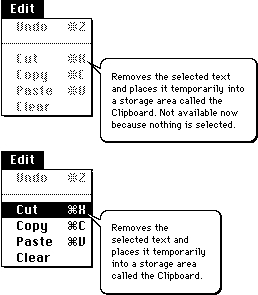
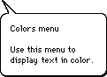
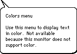
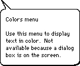
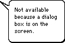
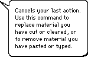
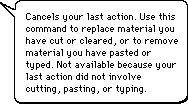
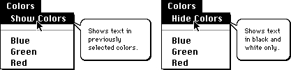

Providing Help Balloons for Menus
If your application uses the standard menu definition procedure, you'll find that it's easier to provide help balloons for menus than for any of your other interface features. This section is relatively lengthy compared to the sections describing dialog boxes, alert boxes, and windows because it explains in detail much of the work you'll also perform when supplying help balloons for those items.This section assumes that your application uses the standard menu definition procedure. If your application uses its own menu definition procedure, you must use Help Manager routines to display and remove help balloons. These routines are described in "Displaying and Removing Help Balloons" on page 3-92. Even if you use these routines, you should read this section so that your balloons emulate the behavior that the Help Manager provides for menus using the standard menu definition function.
To create help balloons for a menu--pull-down, pop-up, or hierarchical--that uses the standard menu definition procedure, create a resource of type
'hmnu'in which you specify help balloons for the menu title and for each menu item. You create a separate'hmnu'resource for each menu.The Help Manager can display different help balloons for the various states of a menu item. Each menu item can have up to four help balloons associated with it, one for each state:
- Note
- BalloonWriter, available from APDA, is a tool that gives nonprogrammers an easy, intuitive way to create help balloons for menus. BalloonWriter creates
'hmnu'resources as appropriate and places them in the resource file of your application; BalloonWriter likewise creates and stores'STR ','STR#', and'TEXT'resources that contain the help messages authored by nonprogramming writers.
For menus that use custom menu definition procedures, nonprogrammers can use BalloonWriter to provide you with delimited ASCII text that you can then use in conjunction withHMShowBalloonto display the desired help balloons.For example, you can define a help balloon that the Help Manager displays when the Cut command is enabled and another help balloon for display when the Cut command is dimmed. Remember that the help balloon you provide for a dimmed menu item should explain why it isn't currently available or, if more appropriate, how to make it available.
- enabled
- disabled (that is, dimmed)
- enabled and checked
- enabled and marked (that is, marked by a symbol other than a checkmark--for example, a bullet or a diamond)
When your application calls the Menu Manager function
- Note
- Although
enabledanddisabledare the constants you use in a resource file to display or dim menus and menu items, you shouldn't use these terms in your help balloons or user guides. Rather, use the term menus, menu commands, or menu items for those that are enabled, and use the term not available or dimmed to distinguish those that have been disabled.MenuSelectorMenuKey, the Menu Manager automatically tracks the cursor, highlights enabled menu items, and displays any additional hierarchical or pop-up menus as the user moves the mouse. As the user drags the cursor across or through a menu, the Menu Manager uses the Help Manager to display any help balloons associated with the current state of the menu title or menu item.If there is sufficient memory, the standard menu definition procedure saves the bits behind the help balloon and restores these bits for quick updating of the screen. If there isn't sufficient memory to save the bits behind the help balloon, then--as with menus--the procedure generates appropriate update events. Figure 3-9 shows help balloons for two instances of a menu, one with the Cut command dimmed, the other with the Cut command enabled.
Figure 3-9 Help balloons for different states of the Cut command

You don't specify hot rectangles or tip coordinates for menus. The rectangles defined by the Menu Manager for menu titles and menu items are used as hot rectangles. The Help Manager initially tries to draw a help balloon for a menu item using variation code 0 (shown in Figure 3-4 on page 3-9) with the tip placed 8 pixels inside the right edge and halfway between the top and bottom edges of the menu item's rectangle. If the balloon's initial position lies wholly or partially offscreen, the Help Manager tries to redraw the balloon by moving its tip to the left edge of the item's rectangle and using variation
code 3. The Help Manager uses variation codes 1 and 2 in its attempts to draw help balloons for menu titles. The Help Manager never moves the tip for menu titles; instead, the tip is always located just below the bottom of the menu bar at the midpoint of the menu title's text.The resource ID of each
'hmnu'resource should match the corresponding menu ID. For example, to provide help balloons for a menu with ID 130, create an'hmnu'resource with resource ID 130.The
'hmnu'resource contains four types of components, listed below. Each component consists of several elements that contain information used by the Help Manager.Here is the general Rez input format of an
- The header component is where you specify information that applies to all help balloons specified in this resource--information such as the version number of the Help Manager, the balloon definition function, and the variation code.
- The missing-items component is where you specify help messages for any menu items missing from or unspecified in the rest of the resource. This is useful, for example, for allowing several menu items to share the same help message.
- The menu-title component is where you specify help messages for the menu title.
- A menu-item component is where you specify the help messages for a particular menu item. You can include any number of menu-item components; however,
the menu-item components in the'hmnu'resource must appear in the order in which their corresponding menu items appear in the menu. If you do not provide menu-item components for any items at the bottom of a menu, a help message from the missing-items component is used.'hmnu'resource. (Rez is the resource compiler provided with Apple's Macintosh Programming Workshop [MPW], available from APDA.)Listing 3-1 shows Rez input code for the
'hmnu'resource for an Edit menu.Listing 3-1 Rez input for a partial
'hmnu'resourceresource 'hmnu' (130, "Edit", purgeable) { /*header component*/ HelpMgrVersion, hmDefaultOptions, /*options*/ 0, /*balloon definition function*/ 0, /*variation code*/ /*missing-items component*/ HMSkipItem { /*no missing items, so skip to menu-title component*/ }, { /*menu-title component*/ HMStringItem { /*use following P-strings*/ /*use string below when menu is enabled*/ "Edit menu\n\nUse this menu to manipulate text.", /*use string below when app dims menu*/ "Edit menu\n\nUse this menu to manipulate text. " "Not available because you do not have permission " "to alter this file.", /*use string below for title dimmed by system */ /* software for an alert or modal dialog box*/ "Edit menu\n\nUse this menu to manipulate text. " "Not available because a dialog box is on " "the screen.", /*use string below for all items when system */ /* software dims them for an alert or modal */ /* dialog box*/ "This item is not available because a dialog box " "is on the screen.", }, /*first menu-item component: Undo command*/ HMStringItem {/*use following P-strings*/ /*use string below when command is enabled*/ "Cancels your last edit.", /*use string below when app dims the command*/ "Cancels your last edit. Not available because " "you haven't performed an editing action yet.", /*can't check the item, so empty string goes below*/ "", /*can't mark the item, so empty string goes below*/ "", }, /*second menu-item component: divider line*/ HMSkipItem { /*no help balloons for divider lines*/ }, /*third menu-item component: Cut command*/ HMStringItem { /*use following P-strings*/ /*use string below when command is enabled*/ "Cuts the selected text to the Clipboard.", /*use string below when app dims the command*/ "Cuts the selected text to the Clipboard. " "Not available now because no text is selected.", /*can't check item, so empty string goes below*/ "", /*can't mark item, so empty string goes below*/ "", } /*menu-item components for Copy, Paste, and Clear */ /* commands go here*/ } };Specifying Header Information for the 'hmnu' Resource
The header component of an'hmnu'resource consists of these elements:Always specify the
- Help Manager version.
- Options.
- Balloon definition function.
- Variation code.
HelpMgrVersionconstant for the Help Manager version element.For the options element, you must specify the constant
hmDefaultOptions.The third element in the header component specifies the resource ID of the window definition function that is used to draw the frame of the help balloon. To use the standard balloon definition function, specify 0 for this element; this is the suggested default. If you use your own balloon definition function (as described in "Writing Your Own Balloon Definition Function" on page 3-86), specify its resource ID for this element.
The fourth element in the header component specifies the preferred position of the help balloon. For example, the standard balloon definition function displays help balloons according to eight different positions. If you specified the standard balloon definition for the preceding element, supply a variation code from 0 to 7 to display the balloon according to one of the eight positions shown in Figure 3-4 on page 3-9. The preferred variation code is 0. If you are unsure of which variation code to use, specify 0; the Help Manager will use a different variant if another is more appropriate. If you use your own balloon definition function, you specify its variation code for this element of the header component.
Specifying Help for Menu Items Missing From the Resource
After the header component, you specify the format and help messages for help balloons for missing items, for the menu title, and for the menu items.Use the missing-items component of the
'hmnu'resource to specify how the Help Manager handles menu items that are not described in this resource. You can also use the missing-items component to supply help messages for menu items that are described in the'hmnu'resource but that lack help messages for any particular states.The missing-items component of this resource is useful when you have menu items with similar characteristics or when the number of menu items is variable. For example, if
the help message for a dimmed item applies to all dimmed menu items, you can specify a help message once in the third element of the missing-items component instead of repeating it in every third element of the various menu-item components.The missing-items component consists of the following five elements:
For missing items (as for the rest of the items listed in an
- An identifier (either
HMStringItem,HMSTRResItem,HMStringResItem,HMPictItem,HMTEResItem, orHMSkipItem) for the format of the help messages.- The help message when a menu item is enabled. This message is displayed either when the item itself is not specified in a menu-item component of this
'hmnu'resource or when its help message is specified in a menu-item component, but specified with either an empty string or a resource ID of 0.- The help message when your application dims the menu item. This message is displayed either when the item itself is not specified in a menu-item component of this
'hmnu'resource or when its help message is specified in a menu-item component, but specified with either an empty string or a resource ID of 0.- The help message when a menu item is enabled and checked. This message is displayed either when the item itself is not specified in a menu-item component of this
'hmnu'resource or when its help message is specified in a menu-item component, but specified with either an empty string or a resource ID of 0.- The help message when a menu item is enabled and marked (with a character other than a checkmark). This message is displayed either when the item itself is not specified in a menu-item component of this
'hmnu'resource or when its help message is specified in a menu-item component, but specified with either an empty string or a resource ID of 0.'hmnu'resource), you store the help messages in text strings within this resource or in separate'STR ','STR#','PICT', or'TEXT'and'styl'resources. For the first element in the missing-items component, use one of the identifiers described in "Specifying the Format for Help Messages" on page 3-21. These identifiers indicate how and where you store your
help messages. Then, depending on the identifier you specify, for the next four elements supply either text strings for help messages or resource IDs of resources that contain help messages.There are two additional identifiers that you can specify for menu items in
'hmnu'resources. These identifiers are explained in "Specifying Help for a Changing Menu Item" on page 3-39 and in "Specifying Resources by Item Name" on page 3-41.
Identifier Purpose HMCompareItem The Help Manager displays help for the current menu item only when it matches a specified string. HMNamedResourceItem The Help Manager displays the help message from the resource that has the same name as the current menu item. Listing 3-2 on page 3-32 illustrates the help resource for a menu titled Colors. Notice in the missing-items component that the element describing dimmed states for menu items has the message "Not available; either you have not selected text to color, or your monitor does not support color." Because this resource doesn't specify a message for any individual command's dimmed state, this message appears in help balloons for the Blue, Green, and Red commands whenever the application disables them. If there are many reasons why your application may have dimmed an item, don't name them all. Instead, describe one or two of the most likely reasons.
Listing 3-2 Rez input for the missing-items component of an
- Note
- As described in the chapter "Dialog Manager" in Inside Macintosh: Macintosh Toolbox Essentials, system software automatically dims your application's menus as appropriate whenever an alert box or a fixed-position modal dialog box appears on the screen. You supply help messages for menu titles and menu items dimmed by system software in the third and fourth elements of the menu-title component of the
'hmnu'resource, as described in the next section. If your application uses movable modal dialog boxes or modeless dialog boxes, your application must dim its menus as appropriate and provide an alternate'hmnu'resource for this state, as described in "Providing Help Balloons for Menus You Disable for Dialog Boxes" beginning on page 3-43.
'hmnu'resourceresource 'hmnu' (132, "Colors", purgeable) { /*header component*/ HelpMgrVersion, hmDefaultOptions, 0, 0, /*missing-items component*/ HMStringItem { "", /*no missing enabled items*/ /*help messages for all items that app dims are below*/ "Not available; either you have not selected " "text to color, or your monitor does " "not support color.", "", /*no missing enabled-and-checked items*/ "", /*no missing enabled-and-marked items*/ }, { /*menu-title component*/ HMStringItem { /*use these P-strings for help messages*/ /*use string below when menu is enabled*/ "Colors menu\n\nUse this menu to display text in color.", /*use string below when app dims menu title*/ "Colors menu\n\nUse this menu to display text in color." "Not available because this monitor does not support color.", /*use string below when system software dims menu */ /* title for an alert or modal dialog box*/ "Colors menu\n\nUse this menu to display text in color. " "Not available because a dialog box is on the " "screen.", /*use string below for all items when system dims */ /* them for alert and modal dialog boxes*/ "Colors your selected text. This item is not " "available because a dialog box is on the screen.", }, /*first menu-item component: Blue command*/ HMStringItem {/*use these P-strings for help messages*/ /*use string below when command is enabled*/ "Displays the selected text in blue.", "", /*use missing-items help when app dims menu*/ "", /*can't check command, so use empty string here*/ "", /*can't mark command, so use empty string here*/ }, /*second menu-item component: Green command*/ HMStringItem {/*use these P-strings for help messages*/ /*use string below when command is enabled*/ "Displays the selected text in green.", "", /*use missing-items help when app dims menu*/ "", /*can't check command, so use empty string here*/ "", /*can't mark command, so use empty string here*/ }, /*third menu-item component: Red command*/ HMStringItem {/*use these P-strings for help messages*/ /*use string below when command is enabled*/ "Displays the selected text in red.", "", /*use missing-items help when app dims menu*/ "", /*can't check command, so use empty string here*/ "", /*can't mark command, so use empty string here*/ } } };Specifying Help for Menu Titles and for Items Dimmed by System Software
After the missing-items component, use the menu-title component to specify the help messages for the menu title and for menu items dimmed by system software. The menu-title component consists of the following five elements:As in the missing-items component, use the first element in the menu-title component to specify an identifier that describes the format for the help messages. Depending on the identifier you specify, for the other elements you supply either text strings for the help messages or the resource IDs of resources that contain the help messages. The second, third, and fourth elements correspond to states of the menu title; the fifth element corresponds to a state of all the menu items.
- An identifier (either
HMStringItem,HMSTRResItem,HMStringResItem,HMPictItem,HMTEResItem, orHMSkipItem) that indicates the format of the help messages.- The help message for the menu title when the menu title is enabled.
- The help message for the menu title when your application dims the menu title.
- The help message for the menu title when system software dims the menu title at the appearance of an alert box or a modal dialog box.
- The help message for all menu items when system software dims them at the appearance of an alert box or a modal dialog box.
Use the second element of the menu-title component to specify a help message that describes the purpose of the menu when it's enabled. For menus in the menu bar, the beginning of the message should name the menu and then concisely describe what kinds of commands are in the menu, as shown in Figure 3-10. (Listing 3-2 on page 3-32 specifies the menu title--"Colors menu"--and then includes the special characters
\n\nto specify two new lines in a Rez input file before specifying a description of the menu itself.)Figure 3-10 A help balloon for an enabled menu title

Because some pull-down menus in the menu bar are identified by icons, not words, offer additional clarification in your help balloon by always providing a name for pull-down menus. For pop-up menus, simply describe what the user does with the menu; don't give the menu a name.Use the third element of the menu-title component to specify a help message that identifies the menu, describes what it does, and then describes why your application has dimmed the menu title. As much as possible, repeat the text that you use for the title's enabled state, then describe why it is not enabled. See Figure 3-11 for an example and see Listing 3-2 on page 3-32 for the Rez input that specifies the help message for the help balloon shown in the figure.
Figure 3-11 A help balloon for a dimmed menu title

In general, you should use the phrase "Not available because" to introduce your explanation of a dimmed title. If there are several reasons why a menu title might be dimmed, don't name them all. Instead, describe one or two of the most likely reasons.Use the fourth element of the menu-title component to specify a help message that describes why system software has dimmed the menu title--that is, because the user must respond to an alert box or modal dialog box on the screen. Figure 3-12 illustrates an appropriate help balloon for this situation.
Figure 3-12 A help balloon for a menu title dimmed by the Dialog Manager

Starting with system software version 7.0, users have been able to use selected menus while the screen displays an alert box or a modal dialog box. For example, the Show Balloons (or Hide Balloons) command is always available from the Help menu so that users can see your help balloons for the modal dialog box or alert box. While some menus are accessible (in particular, the Help, Keyboard, and--when appropriate-- Edit menus), others aren't. The chapter "Dialog Manager" in Inside Macintosh: Macintosh Toolbox Essentials describes the circumstances under which menus are enabled or disabled when alert boxes and dialog boxes are displayed.Use the fifth element to specify the help message for all menu items whenever system software dims them because of an alert box or a modal dialog box. Because this message is used for all items in the menu, it needs to be somewhat general, as shown in
- Note
- If your application uses movable modal dialog boxes, you must dim your menus and provide an alternate
'hmnu'resource for this state, as described in "Providing Help Balloons for Menus You Disable for Dialog Boxes" beginning on page 3-43.
Figure 3-13.Figure 3-13 A help balloon for menu items dimmed by the Dialog Manager

Specifying Help for Menu Items
After you create the header component, the missing-items component, and the menu-title component, you specify help messages in a menu-item component for
each menu item. The menu-item components in the'hmnu'resource must appear in the order in which their corresponding menu items appear in the menu. (Because of this, if you have menu items that your application can add while it is running, you should add these dynamic items to the end of the menu to simplify your implementation of help balloons for your nondynamic items.)The menu-item component consists of the following five elements:
For the first element of each menu-item component, supply an identifier to describe the format of the help messages in that component. Then, depending on the identifier you specify, use the other elements of the menu-item component to supply either text strings for the help messages or the resource IDs of resources that contain the help messages.
- An identifier (either
HMStringItem,HMSTRResItem,HMStringResItem,HMPictItem,HMTEResItem, orHMSkipItem) that indicates the format of the help messages.- The help message for the menu item when the item is enabled.
- The help message for the menu item when your application dims the item.
- The help message for the menu item when the item is enabled and checked.
- The help message for the menu item when the item is enabled and marked with a character other than a checkmark.
You can use the
HMSkipItemidentifier for items that appear in your menu but for which you don't provide a help balloon. For example, you can specifyHMSkipItemfor divider lines that appear in menus. (Divider lines cannot have help balloons.) If you specifyHMSkipItem, the Help Manager does not display help balloons for that menu item, even if the missing-items component specifies a help message.For the second element, specify a help message that describes what the item usually does. Don't name the menu item. Begin with a verb describing what happens when the user chooses the item. For example, the help balloon for the Undo command in an Edit menu should contain something similar to the information in Figure 3-14.
Figure 3-14 A help balloon for a menu item

For menu items that display a dialog box, it is usually unnecessary to state that a dialog box will appear. The fact that a menu item displays a dialog box is not what the user wants to know; the user wants to know what choosing the menu item ultimately accomplishes.For the third element, specify a help message that describes what the menu item does and why your application has dimmed the item. As much as possible, repeat the text
that you use for the item's enabled state, and then describe why it is not enabled. In general, you should use the phrase "Not available because" to introduce your explanation of the dimmed item. If there are multiple reasons why an item might be dimmed, don't name them all. Instead, describe one or two of the most likely reasons. Figure 3-15 gives an example of a help message for a dimmed Undo command.Figure 3-15 A help balloon for a dimmed menu item

If your application checks or otherwise marks a menu item, use the fourth and fifth elements of that item's component in the'hmnu'resource to describe the special condition indicated by that state. As with dimmed states, try to repeat the text that you use for the title's enabled state, and then describe why it is checked or marked. If there are multiple reasons why an item might be checked or marked, don't name them all. Instead, describe one or two of the most likely reasons.Note that, for any component in the resource, you can specify only one format for all of its help messages. For example, if you specify the
HMSTRResItemidentifier in a menu-item component for the Undo command, you must store all help messages specified in that component in'STR 'resources. (However, if you specify a resource ID of 0 or an empty string as the help message of any item in order to use the help message from the missing-items component, the help message follows the format specified in the missing-items component.)You do not have to provide a help message for every state of a menu item. If you do
not provide a help message for a particular state, the Help Manager uses the help message specified in the missing-items component. If the missing-items component does not specify a help message for that state either, the Help Manager does not display a help balloon.Listing 3-3 shows a sample
'hmnu'resource for another Edit menu.
Although Listing 3-1 and Listing 3-2 illustrate'hmnu'resources that contain their own Pascal-string help messages, you should keep your help messages in separate, more easily localized resources. The'hmnu'resource in Listing 3-3 stores its help messages in a separate'STR#'resource (which is given a corresponding resource ID of 130 for easier maintenance).Listing 3-3 Rez input for corresponding
'hmnu'and'STR#'resourcesresource 'hmnu' (130, "Edit menu help", purgeable) { HelpMgrVersion, 0, 0, 0, /*standard header component*/ HMSkipItem { /*missing-items component*/ /*no missing items, so skip to menu-title component*/ }, { /*menu title and items below*/ /*menu-title component*/ HMStringResItem {/*use an 'STR#' for help messages*/ 130,1, /*'STR#' res ID, index when menu is enabled*/ 130,2, /*'STR#' res ID, index when app dims menu*/ 130,3, /*'STR#', index for title that system */ /* software dims for all alert and modal */ /* dialog boxes*/ 130,4 /*'STR#', index for items that system */ /* software dims for all alert and modal */ /* dialog boxes*/ }, /*first menu-item component: Undo command*/ HMStringResItem { /*use 'STR#' resource for help messages*/ 130,5, /*'STR#' res ID, index when item is enabled*/ 130,6, /*'STR#' res ID, index when item is dimmed*/ 0,0, /*can't check command*/ 0,0 /*can't mark command*/ }, /*second menu-item component: divider line*/ HMSkipItem { /*no balloon help for divider lines*/ }, /*third menu-item component: Cut command*/ HMStringResItem { /*use an 'STR#' for help messages*/ 130,7, /*'STR#' res ID, index when item is enabled*/ 130,8, /*'STR#' res ID, index when app dims item*/ 0,0, /*can't check command*/ 0,0 /*can't mark command*/ }, /*menu-item component for Copy command goes here*/ } }; resource 'STR#' (130, "Edit menu help strings") { /*help text for Edit menu*/ { /*array StringArray: 17 elements*/ /*[1] help text for enabled Edit menu title*/ "Use this menu to cancel your last action, to manipulate " "text, to select the entire content of a document, " "and to show what's on the Clipboard."; /*[2] help text for Edit menu title dimmed by app*/ "Use this menu to cancel your last action, to manipulate " "text, to select the entire content of a document, " "and to show what's on the Clipboard. Not " "available now."; /*[3] help text for Edit menu title dimmed by system */ /* software for all alert and modal dialog boxes */ /* that don't contain editable text items*/ "Use this menu to cancel your last action, to manipulate " "text, to select the entire content of a document, and " "to show what's on the Clipboard. Not available " "because a dialog box is on the screen."; /*[4] help for Edit menu items that system software dims */ /* for all alert and modal dialog boxes */ /* that don't contain editable text items*/ "Not available because a dialog box is on the screen."; /*[5] help text for enabled Undo command*/ "Cancels your last action. Use this command to replace " "material you have cut or cleared, or to remove material " "you have pasted or typed."; /*[6] help text for Undo command dimmed by app*/ "Cancels your last action. Use this command to replace " "material you have cut or cleared, or to remove material " "you have pasted or typed. Not available because your " "last action did not involve cutting, pasting, " "or typing."; /*help text for all other commands goes here*/ } };The'hmnu'resource in Listing 3-3 specifies the standard balloon definition function and variation code in the third and fourth elements of the header component. The missing-items component is specified using theHMSkipItemidentifier, meaning that this'hmnu'resource does not provide any help balloons for menu items that are missing from this resource or that do not have help messages specified for any states.Following the menu-title component, the menu-item components for the menu items are listed in the order in which the items appear in the menu. For menu-item components that do not specify information for a particular state, the Help Manager normally uses the information from the missing-items component. However, in Listing 3-3 the
'hmnu'resource does not specify a help message in the missing-items component. Instead, all help messages are specified in each menu-item component in this resource. Because there are no enabled-and-checked or enabled-and-marked states for the Undo and Copy commands, these states are specified with resource IDs of 0.As described in the chapter "Dialog Manager" in Inside Macintosh: Macintosh Toolbox Essentials, system software does not dim your application's Edit menu when you display a dialog box that contains editable text items. Listing 3-3 nevertheless provides help messages for a dimmed Edit menu for those instances when the application displays alert boxes and dialog boxes that do not contain editable text items.
Specifying Help for a Changing Menu Item
If you have a menu item that changes names, you can use theHMCompareItemidentifier to compare a string against the current menu item in that position. If the string specified after theHMCompareItemidentifier matches the name of the current menu item, the Help Manager displays the help messages specified in the next four elements of the'hmnu'resource. Because of performance considerations, theHMCompareItemidentifier shouldn't be used unless necessary.A menu-item component that uses the
HMCompareItemidentifier uses a different format than other menu-item components do. Here are the seven elements you use for specifying help in an'hmnu'resource for a changing menu item.Create a component that uses the
- The
HMCompareItemidentifier.- The string to compare against current menu item.
- The identifier (either
HMStringItem,HMSTRResItem,HMStringResItem,HMPictItem,HMTEResItem, orHMSkipItem) that indicates the format of the help messages.- The help message for the menu item when the item is enabled.
- The help message for the menu item when the item is dimmed.
- The help message for the menu item when the item is enabled and checked.
- The help message for the menu item when the item is enabled and marked.
HMCompareItemidentifier for every item name that can appear in a particular menu position. For example, Listing 3-4 shows an'hmnu'resource for a menu command that toggles between Show Colors and Hide Colors.Listing 3-4 Rez input for an
- Note
- It is important to provide components for all possible strings that can appear in the changing item. Also note that if you use the
HMCompareItemidentifier for a menu item, you should ensure that the following menu item has a text string that is different from the one that theHMCompareItemmenu-item component compares against.'hmnu'resource that usesHMCompareItemfor a changing menu itemresource 'hmnu' (132, "Colors menu help", purgeable) { /*see Listing 3-2 for missing-items example*/ /*see Listing 3-2 for Colors menu title's help example*/ HMCompareItem { /*help message if first command is */ /* called Show Colors*/ "Show Colors", HMStringResItem { 132, 1, /*enabled*/ 0, 0, /*use missing items*/ 0, 0, /*item can't be checked*/ 0, 0 /*no marked state*/ }, }, HMCompareItem { /*help if the first command is */ /* called Hide Colors*/ "Hide Colors", HMStringResItem { 132, 2, /*enabled*/ 0, 0, /*use missing items*/ 0, 0, /*item can't be checked*/ 0, 0 /*no marked state*/ }, }, /*Blue command's help messages*/ HMStringItem { /*use these P-strings for help messages*/ /*use string below when command is enabled*/ "Displays the selected text in blue.", "", /*use missing-items help when menu is dimmed*/ "", /*can't check command--use empty string here*/ "", /*can't mark command--use empty string here*/ }, /*see Listing 3-2 for other commands' examples*/ } }; resource 'STR#' (132, "Hide & Show Colors commands help text") { { /*[1] help text for enabled Show command*/ "Shows text in previously selected colors."; /*[2] help text for enabled Hide command*/ "Shows text in black and white only."; } };As illustrated in Figure 3-16, when the menu command is Show Colors, the Help Manager displays the help message described by the firstHMCompareItemcomponent. When the menu command is Hide Colors, the Help Manager displays the help message described by the secondHMCompareItemidentifier.Figure 3-16 Help balloons for a changing menu item

Specifying Resources by Item Name
You can also specify help messages in a component with theHMNamedResourceItemidentifier, which causes the Help Manager to use a resource whose name matches the name and state of the current menu item. A menu-item component that uses theHMNamedResourceItemidentifier uses a different format than the other menu-item components do. Here are the two elements you use for specifying named resources as help messages in an'hmnu'resource.To provide help for a menu item when it is enabled, create a resource with the same name as the menu item, then put the help message for the enabled menu item in
- The
HMNamedResourceItemidentifier.- A resource type (either
'STR ','PICT', or, for text,'TEXT') that contains the help messages for the current menu item. If you specify'TEXT', you also get style information for the'TEXT'resource by creating a resource of type'styl'with the same name.
this resource. The Help Manager uses theGetNamedResourcefunction to find the resource--of the type specified in the second element of the menu-item component--that has the same name as the current menu item.To provide help for a menu item when it is dim, create a resource with a name consisting of the menu item and an exclamation point (!), then put the help message for the dimmed menu item in this resource. When the menu item is dimmed, the Help Manager appends an exclamation point to the name of the menu item and searches for a resource by that name. Similarly, if a menu item is enabled and marked with a checkmark or other mark, the Help Manager appends the mark to the name of the current menu item and looks for a resource by that name.
For example, the
'hmnu'resource in Listing 3-5 specifies that the Help Manager extracts the help message from a resource namedRedof type'STR 'when displaying a help balloon for an enabled menu command named Red. If the menu item is dimmed, the Help Manager gets the'STR 'resource with the nameRed!and uses its text string for the help message. If the Red command could be marked with an asterisk (*), the Help Manager would search for the resource with the nameRed*of type'STR '.Listing 3-5 Rez input for specifying help messages with named resources
resource 'hmnu' (132, "Colors menu help", purgeable) { /*see Listing 3-2 for header, missing-items, */ /* menu-title, and menu-item components*/ HMNamedResourceItem { /*Red command's help message*/ 'STR '/*use the 'STR ' resource named "Red"*/ } } }; resource 'STR ' (333, "Red") { /*help text for enabled */ /* Red command*/ "Displays the selected text in red." }; resource 'STR ' (334, "Red!") { /*help text for dimmed */ /* Red command*/ "Not available; either you have not selected text to " "color, or your monitor does not support color.", };Providing Help Balloons for Menus You Disable for Dialog Boxes
The Dialog Manager and the Menu Manager interact to provide various degrees of access to the menus in your menu bar. For alert boxes and modal dialog boxes without editable text items, you can simply allow system software to dim your menu titles and menu items as appropriate. As described in "Specifying Help for Menu Titles and for Items Dimmed by System Software" beginning on page 3-33, you specify help balloons for these dimmed menu titles and menu items in the fourth and fifth elements of your'hmnu'resources' menu-title components.However, because system software cannot handle the Undo or Clear command (or any other context-appropriate command) for you, your application should handle its own menu bar access for modal dialog boxes with editable text items by performing the following tasks:
You don't need to do anything else for the system-handled menus--namely, Application, Keyboard, and Help. System software handles these menus for you automatically.
- Use the Menu Manager function
DisableItemto disable the Apple menu or the first item in the Apple menu (typically, your application's About command) in order to take control of its menu bar access when displaying a modal dialog box.- Use the Menu Manager function
DisableItemto disable all of your application's menus except the Edit menu, as well as any inappropriate commands in the Edit menu.- Use the Dialog Manager procedures
DialogCut,DialogCopy,DialogPaste, andDialogDeleteto support the Cut, Copy, Paste, and Clear commands in editable text items.- Provide your own code for supporting the Undo command.
- Use the Menu Manager function
EnableItemto enable your application's items in the Help menu as appropriate (system software disables all items except the Hide Balloons/Show Balloons command).Although it always leaves the Help, Keyboard, and Application menus and their commands enabled, system software does nothing else to manage the menu bar when you display movable modal and modeless dialog boxes. Instead, your application should allow or deny access to the rest of your menus as appropriate to the context. For example, if your application displays a modeless dialog box for a search-and-replace command, you should allow access to the Edit menu to assist the user with the editable text items, and you should allow use of the File menu so that the user can open another file to be searched. However, you should disable other menus if their commands cannot be used inside the active modeless dialog box.
When creating a modeless dialog box, your application should perform the following tasks:
When your application creates a movable modal dialog box, it should perform the following tasks:
- Use the Menu Manager function
DisableItemto disable only those menus whose commands are invalid in the current context.- If the modeless dialog box includes editable text items, use the Dialog Manager procedures
DialogCut,DialogCopy,DialogPaste, andDialogDeleteto support the Cut, Copy, Paste, and Clear commands in editable text items.- Enable your application's items in the Help menu, as appropriate. (System software disables all items except the Hide Balloons/Show Balloons command.)
See the chapters "Menu Manager" and "Dialog Manager" in Inside Macintosh: Macintosh Toolbox Essentials for more information about menus, alert boxes, and dialog boxes.
- Leave the Apple menu enabled so that the user can open other applications with it.
- If your movable modal dialog box contains editable text items, leave the Edit menu enabled but use the Dialog Manager procedures
DialogCut,DialogCopy,DialogPaste, andDialogDeleteto support the Cut, Copy, Paste, and Clear commands.- Use the Menu Manager function
DisableItemto disable all of your other menus.When you use the Menu Manager function
DisableItemto dim your menus, the Help Manager does not know that you have dimmed them because you're displaying a dialog box; instead, the Help Manager assumes that you've dimmed them for some other reason. Whenever you dim your own menus--for whatever reason--the Help Manager always uses the second element of your menu-title component and the second elements of your menu-item components.To provide help messages that explain that the menu and its items are dim because your application dimmed them to display a dialog box, you must use an alternate
'hmnu'resource.For example, if an application were to allow only one document at a time to be opened, it would dim the New command in the File menu whenever a document were open. The second element of that item's component specifies a help message similar to this.
/*help message for dimmed New command*/ "Opens a new SurfWriter document called \"Untitled\". " "Not available now because a SurfWriter document is " "already open. (SurfWriter can open only one document " "at a time.)";This is not an appropriate message for the item's help balloon when the application displays a modal dialog box that contains an editable text item--but unless the application changes the'hmnu'resource for its File menu, this is the message that the Help Manager displays.To handle those menus that you dim for dialog boxes, your application must use alternate
'hmnu'resources. In an alternate'hmnu'resource, use the second element of the missing-items component and the second element of the menu-title component to specify help balloons for the menu's dimmed title and all of its dimmed items, as shown in Listing 3-6.Listing 3-6 Specifying an alternate
'hmnu'resource for a menu that your application disables when it displays movable modal dialog boxesresource 'hmnu' (kFileHelpID, purgeable) { /*use this when my application dims the menu to display */ /* a modal dialog box with editable text items*/ /*header component*/ HelpMgrVersion, hmDefaultOptions, 0, 0, /*missing-items component*/ HMStringResItem { 0, 0, /*missing enabled items: not applicable */ /* because they're all dim*/ 256, 1, /*use this help string for all dimmed */ /* menu items--they're all missing from */ /* this resource*/ 0, 0, /*missing enabled-and-checked items: not */ /* applicable because they'd be dimmed*/ 0, 0, /*missing enabled-and-marked items: not */ /* applicable because they'd be dimmed*/ }, /*menu-title component*/ { /*File menu title help when dimmed for a movable modal*/ HMStringResItem { 0, 0, /*no enabled title: it's dimmed*/ 256, 2, /*use this help string for menu title */ /* dimmed for a movable modal dialog*/ 0, 0, /*Help Manager doesn't look here for */ /* movable modal dialogs*/ 0, 0, /*Help Manager doesn't look here for*/ /* movable modal dialogs*/ }, } /*use missing-items info for all dimmed menu items*/ }; resource 'STR#' (256, "help messages for dimmed menus") { /*use these when my application dims menus to show a */ /* modal dialog box*/ { /*[1] Dimmed items help text*/ "Not available now because a dialog box is on " "the screen.". /*[2] help message for dimmed File menu title*/ "File menu\n\nUse this menu to open, close, save, and print " "SurfWriter documents, and to quit SurfWriter. " "Not available because a dialog box is on the screen."; /*[3] help message for dimmed Tools menu title*/ "Tools menu\n\nUse this menu to ... " /*more text goes here*/ "Not available because a dialog box is on the screen."; /*help messages for other dimmed menu titles go here*/ };Use theHMSetMenuResIDfunction to associate alternate'hmnu'resources with your menus whenever your application displays a movable modal dialog box. Listing 3-7 illustrates how an application disables its menus and then reassigns them appropriately, using alternate'hmnu'resources before displaying a dialog box.Listing 3-7 Reassigning
'hmnu'resources before displaying a movable modal dialog boxPROCEDURE MyAdjustMenusForDialogs; VAR window: WindowPtr; windowType: Integer; myErr: OSErr; menu: MenuHandle; BEGIN window := FrontWindow; windowType := MyGetWindowType(window); CASE windowType OF kMyModalDialogs: BEGIN menu := GetMenuHandle(mApple); {get handle to Apple menu} IF menu = NIL THEN EXIT(MyAdjustMenusForDialogs); DisableItem(menu, 0); {disable Apple menu to get control of menus} myErr := HMSetMenuResID(mFile, kFileHelpID); {set up help balloons} menu := GetMenuHandle(mFile); {get handle to File menu} IF menu = NIL THEN EXIT(MyAdjustMenusForDialogs); DisableItem(menu, 0); {disable File menu} myErr := HMSetMenuResID(mFile, kFileHelpID); {set up help balloons} IF myErr <> NoErr THEN EXIT(MyAdjustMenusForDialogs); menu := GetMenuHandle(mTools); {get handle to Tools menu} IF menu = NIL THEN EXIT(MyAdjustMenusForDialogs); DisableItem(menu, 0); {disable Tools menu} myErr := HMSetMenuResID(mTools, kToolsHelpID); {help balloons} IF myErr <> NoErr THEN EXIT(MyAdjustMenusForDialogs); MyAdjustEditMenuForModalDialogs; END; {of kMyModalDialogs CASE} kMyGlobalChangesModelessDialog: ; {adjust menus here as needed} kMyMovableModalDialog: ; {adjust menus here as follows: } { diable all menus except Apple, } { call MyAdjustEditMenuForModalDialogs for editable text items} END; {of CASE} END;TheMyAdjustMenusForDialogsroutine in Listing 3-7 first determines what type of dialog box is in front: modal, movable modal, or modeless. For modal dialog boxes,MyAdjustMenusForDialogsdisables the Apple menu so that the application can take control of its menus away from the Dialog Manager. TheMyAdjustMenusForDialogsroutine then uses the Menu Manager routinesGetMenuHandleandDisableItemto disable all other application menus except the Edit menu.To adjust the items in the Edit menu,
MyAdjustMenusForDialogscalls another application-defined routine,MyAdjustEditMenuForModalDialogs. TheMyAdjustEditMenuForModalDialogsroutine, which is not shown in this volume, uses application-defined code to implement the Undo command; uses the Menu Manager procedureEnableItemto enable the Cut, Copy, Paste, and Clear commands when appropriate; and disables the commands that support Edition Manager capabilities.After removing a dialog box from the screen, enable the appropriate menus again and use the
HMSetMenuResIDfunction to reassociate your original help balloons with the reenabled menus. (You can pass -1 to theHMSetMenuResIDfunction to remap menus to their previous'hmnu'resources.)